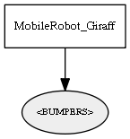

Global overview
All modules
All variables
All commands
Mission files
Pipelines
Variable: <BUMPERS>
Variable info:
Variable name
Short description
Who publishes it?
Who subscribes to it?
<BUMPERS>
The state of front and read bumpers (1 pressed /0 unpressed) of the Mobile Robotic Base
MobileRobot_Giraff
Variable graph:

Detailed description:
The state of front and read bumpers (1 pressed /0 unpressed) of the Mobile Robotic Base
Page generated by
Mooxygen 1.1.0
at Thu Jan 22 11:30:21 2015